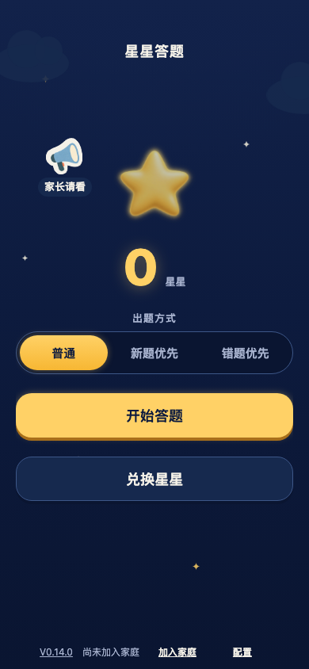
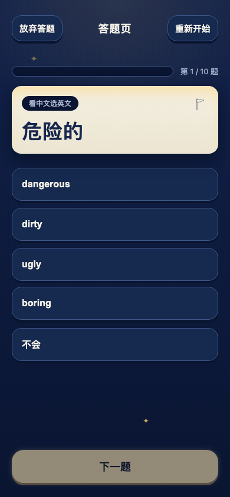
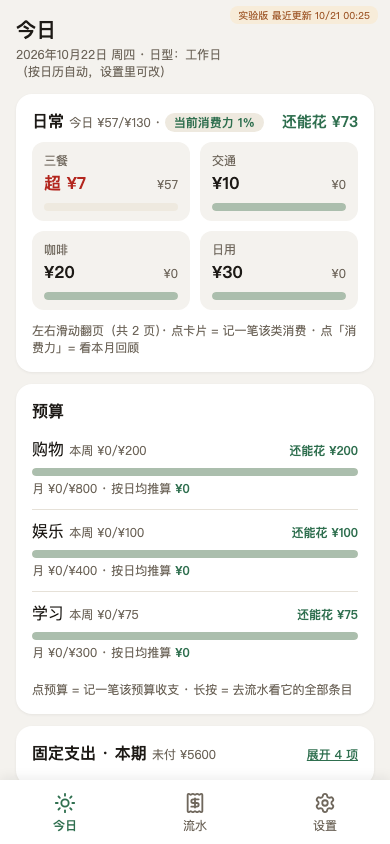
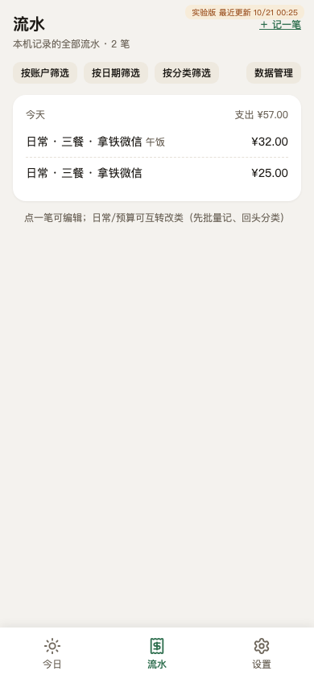

Independent Practice · 2026
AI-native products,
one human + an agent team.
Selected side projects — senior UX/UI designer at BMW by day, solo product owner of an AI-agent development team by night. Live products, real users (my family), engineering discipline.
How I work
Since early 2026 I've been running a small product studio with an unusual team structure: I am the only human — product owner, design lead, and final decision-maker — and AI agents do the heavy lifting as PM, designer, developer, and tester. The workflow is spec-driven: requirements are interrogated into specs, split into tickets, implemented test-first, accepted ticket by ticket, then archived with a retrospective.
What makes it work is not the models — it's the discipline layer I design around them: governed domain vocabulary, architecture decision records (including rejected options), written agent-collaboration conventions, CI on every push, and privacy scans before every commit. AI produces; the system I designed keeps the output clean.
Methodology built on Matt Pocock's open-sourced ai-dev-tools skills framework — publicly credited in the repos.
Star Quiz 星星答题


The product
A family learning app for my own child: kids answer quiz questions, earn stars, and redeem stars for real-world rewards. The twist is the proposal board — the next reward and its price are negotiated between parent and child inside the app, so motivation is co-designed with the kid, not imposed. Deliberately a practice engine, not a testing tool: no judgement, no punishment, adaptive difficulty, "one more round" as the only metric that matters.
My role — designing the human–agent contract
I'm the product owner and design lead of a team where every other seat is an AI agent. The real design work here is the collaboration contract that keeps a one-human team shipping production-grade software:
Spec as the contract
Every feature starts as an interrogated spec, gets split into tickets, is implemented test-first, and is accepted ticket by ticket before merging.
Language governance
A domain glossary (CONTEXT.md) is the single source of truth — every term carries an explicit "this is NOT what it means" avoid-list.
Decision archaeology
18 architecture decision records, each preserving rejected alternatives. Six months later, anyone can read why the system is shaped the way it is.
Studio vs. showroom
A two-repo system (ADR 0018): the messy studio stays private; the public repo is an allow-listed, curated projection.
Decisions I own
- Data boundary as a product promise: no accounts, no analytics, no long-term profiling — records live locally first and sync only across the family's own devices via a self-built thin-sync backend. Code public, data private.
- Quality floor: unit + acceptance tests in-repo, three CI tracks on every push.
- Real-world operation: live at starquiz.link, in daily use by a real family, iterated at the pace of a real child's school terms.
Most AI UX work today is designing chat interfaces. This project is the harder problem: designing the interface between human intent and machine execution — specs, vocabulary, acceptance, and audit trails that make autonomous agents trustworthy enough to ship with.
Pocket Budget 口袋账房


The product
A local-first budgeting PWA that answers exactly one question: "how much can I spend today, and should I buy this?" Bookkeeping, reports, and multi-device sync are explicitly out of scope — after the books are balanced, what a person faces is the spending decision in front of them, right now. Three competing approaches were prototyped and archived before building; the comparison still lives in the repo.
Domain model as information architecture
"Budget" is not one thing. The app separates four kinds of money, typed by where you record it — entry point is the classification, so users never sort transactions after the fact:
| Type | What it manages | The question it answers |
|---|---|---|
| Daily | Daily rhythm, two day-types (workday / weekend) | What a normal day costs — soft signals, no hard limits |
| Budget | Spendable areas; monthly allowance derived into weekly pace | How much is left — derived at render time, never stored |
| Fixed | Recurring monthly / yearly obligations | Paid or not — a status, not a flow |
| Transfer | Movement between accounts (cash → card → investment) | The record of a fact — not spending |
Privacy as UX, not policy
No accounts, no server, no telemetry — data never leaves the browser. One-tap JSON export as portable "vouchers"; import-as-restore for device moves.
Event-sourcing core
Events are the only source of truth; every number is derived at render time. Day / week / month / year rollovers need no timers or resets. Guarded by 25 unit tests.
More from the studio
The two products above are the public showcase. The studio runs on more experiments — private, but honest work:
A native macOS sidebar that docks to the screen edge as a persistent AI-session surface. No Dock icon, position memory, always within reach. Shelved, with a restart playbook written.
A spec-driven tool for treating life goals like debuggable systems — quests, evidence, and iteration loops instead of resolutions.
A long-running personal operating system — journals, projects, memory, and configuration for an AI life companion, running since April 2026.
The household ledger behind Pocket Budget: real financial records with audit trails, checksums, and statement imports. The proving ground the budget app's schema migrations were tested on.